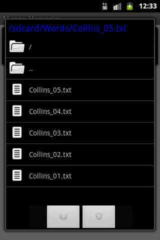
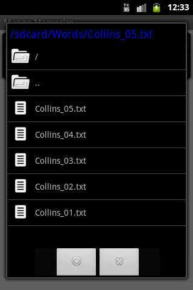

Blog: http://mangodict.blogspot.com/
EMail: jeffrey.wuzw@gmail.com
MSN: wingfancy@hotmail.com
This is an Android dictionary application.
There are two main functions about MangoDict.
A. Mango Dictionary:
You can use MangoDict as a dictionary tool, it support all the 'stardict' format dictionaries.
There are near 1000 different kind of 'stardict' dictionaries on the website: http://abloz.com/huzheng/stardict-dic/
If you can't download the dictionaries from that website, you can contact with me.
B. Mango Memorize:
You can use MangoDict as a memorize tool, it can help you to memorize new words.
It use SM2 algorithm to help you memorize more easier.
Mango Dict support 3 type ways to search: 'Glob-style pattern matching', 'Fuzzy query' and 'Full-text' search.
A. Mango Dictionary:
In the first UI, you can get some information about how to search with Mango Dictionary.

Select the 'Setting' menu item from the menu by press the 'menu' key and select 'More' to config your dictionaries:


First, you need to unzip your 'stardict' format dictionaries and put them on your SD card. You must have a SD card on you phone before you use MangoDict.
For example, you can put the dictionaries on the path '/sdcard/MangoDict/dicts' as following picture. All you dictionaries must be put into a subfolder called 'dicts'.
Now from the 'Setting' UI, you can press 'Path...' button to select your dictionaries path. You should select the path '/sdcard/MangoDict' as your dictionaries path as following pictures.


On the 'Setting' UI, you can enable/disable the functin 'Translate Clipboard Text', if this function is enabled, then if the content of the your phone's 'clipboard' changed, a popup dictionary window will be shown as following picture.


On the 'Setting' UI, you can also set the background color, text color and word color of the dictionary main UI.
The word color means the key word you used to search. The following pictures are the different effect with different color setting.


On the 'Setting' UI, you can select 'Index', 'Capture' or 'Memorize' to switch to dictionaries select UI.
1. 'Index' dictionaries are used when you search the word on the main dictionary UI.
2. 'Capture' dictionaries are used when the popup dictionary window is shown.
3. 'Memorize' dictionaries are used by 'Mango Memorize' function.
Here, you can click the 'Check Box' on the right to select the dictionary, and you can drag the dictionary name to sort the dictionaries.


On the main UI, you can input the word which you want to search, then a popup words list will be shown, you can select the correct word what you want to search. Then the result will be shown. If you select more than one dictionaries, then all of the resule will be shown with the dictionary's name. You can touch the dictionary's name to scroll up/down the dictionary's content.
The first button can show the words list again, the second button can search the word you typed, the third button can refresh the words list with the word you typed.

Here is a sample when you search Chinese.


If you use 'Glob-style pattern matching', 'Fuzzy query' or 'Full-text' ways to search, a progress dialog will be shown, then the search result words list will be shown. You can select the word from the words list.


The 'Play word' menu item will show a dialog within this you can play the current work which you searched and also you can record your voice and play it to see if your pronunciation is correct. And 'Play clipboard' will play the content in the clipboard.
The 'Add word' menu item will add the current word to the 'New words' list. The 'History words' can show the history words you searched, and the 'New words' can show the words you added with the menu item 'Add word'. You can select the word from the words list, then this word will be searched.

The 'Find on page' menu item will allow you to search the words on this page.

B. Mango Memorize:
First, you need to select the dictionaries for Mango Memorize within the Mango Dictionary 'Setting' UI.
Second, you need to prepare the words list file which included the words you want to memorize.
Here are some sample words list file:
http://dl.dropbox.com/u/3494269/MangoDict/MemorizeSample/Collins_01.txt
http://dl.dropbox.com/u/3494269/MangoDict/MemorizeSample/Collins_02.txt
http://dl.dropbox.com/u/3494269/MangoDict/MemorizeSample/Collins_03.txt
http://dl.dropbox.com/u/3494269/MangoDict/MemorizeSample/Collins_04.txt
http://dl.dropbox.com/u/3494269/MangoDict/MemorizeSample/Collins_05.txt
Now you can open the 'Select Memorize' dialog, press the third button to select the words list file you've prepared.


 
Now the file used to memorize will be added to the list, you can select one of them to learn.


Give your answer about the level you know the word.

'Scheduled Cards' allow you to learn scheduled cards; 'New Cards' allow you to learn new cards; 'Ahead Cards' allow you to learn the cards you've learnt.


'Schedule' allow you to see the cards schedule.

'Statistic' allow you to see the current card information and some other information.

By the 'Configuration', you can set some parameters.